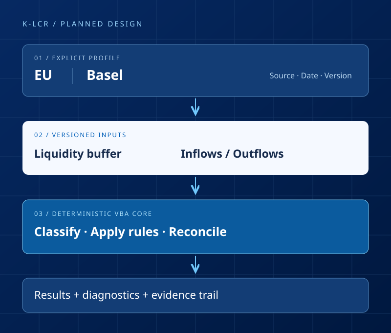

PURE CORE
Deterministic VBA
Explicit inputs and immutable configuration. Planned core procedures depend on their arguments, without reading worksheets, files or mutable host state.
Read the VBA contracts ↗Liquidity risk / Reference and independent validation
An Excel/VBA foundation for a traceable Liquidity Coverage Ratio reference.
Separate planned EU and Basel profiles. Explicit inputs, reviewable rules and independent evidence, from the source decision to the reported result.

01 / Scope
K-LCR is being prepared for people who need to inspect and independently validate a Liquidity Coverage Ratio calculation. The foundation makes the intended method, its inputs and the evidence behind each result visible.
EU and Basel are distinct planned profiles. Source editions, reporting dates and parameter versions must be explicit before a calculation can be implemented.
The planned scope covers liquidity-buffer classification, inflows, outflows, intermediate reconciliations and ratio outputs. Exact eligibility and treatment rules remain to be specified.
Use synthetic cases, independently derived expected values and a real Excel host run. Each claim must point to its source, tested revision and recorded result.
Production calculations, regulatory reporting submission, real portfolio data and numerical certification are outside the repository-setup milestone.
02 / Architecture
The selected stack is Excel/VBA. The architecture separates deterministic calculation from request validation and Excel interaction. Python and Node support repository checks; they are not an alternative production calculation engine.
PURE CORE
Explicit inputs and immutable configuration. Planned core procedures depend on their arguments, without reading worksheets, files or mutable host state.
Read the VBA contracts ↗PUBLIC API
Deliberate entry points, named errors and documented types. Keep profile and version selection explicit, and preserve caller-owned inputs.
Explore the boundaries ↗EXCEL HOST
The planned adapter owns workbook interaction and state restoration. A macro-free template, source synchronization and host compatibility still require implementation and evidence.
Read the host target ↗03 / Get started
Clone the public source and read the prerequisites before running the portable checks.
git clone --branch release/0.1.0 https://github.com/danielep71/K-LCR.git
cd K-LCR
python tools/check.py --ciThe command records the candidate and check results. It requires the tooling described in the installation guide. There is currently no workbook to download or install.
Open developer setup ↗04 / Evidence and boundaries
AVAILABLE NOW
Repository integrity checks tooling, configuration, tracked text, Python quality and workflow syntax. A passing run applies to its candidate and scope.
Inspect the workflow runs ↗PLANNED HOST EVIDENCE
No Excel host run has been recorded. A genuine smoke test must identify the candidate, environment, cases and cleanup result before a host claim can be made.
Follow the host-evidence work ↗PLANNED NUMERICAL EVIDENCE
Regulatory sources, field-level contracts, independent fixtures and tolerances remain setup work. Static checks alone cannot establish numerical correctness.
Follow source registration ↗Follow validation contracts ↗Reference / Research / Independent validation